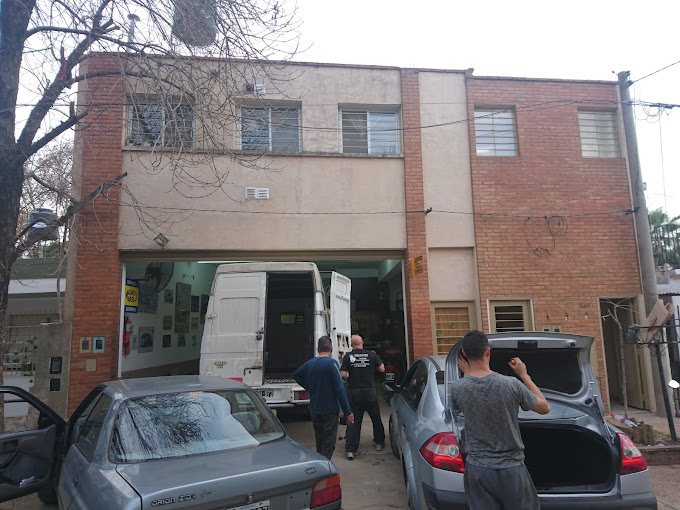
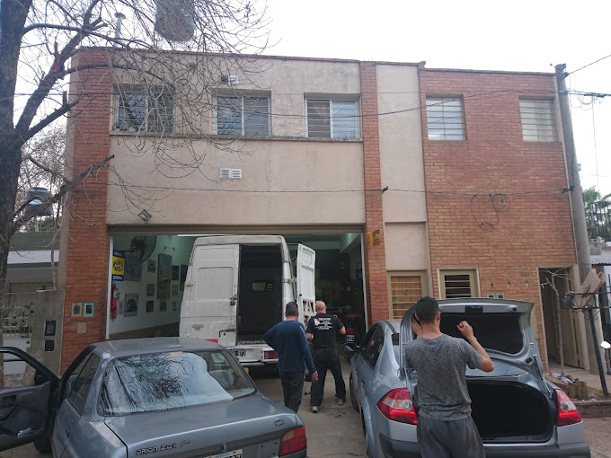

Institucional
NUESTRO TRABAJO EL QUE NOS CARACTERIZA Y NOS IMPULSA CADA DÍA A VIVIR NUESTRA VERDADERA VOCACIÓN DE SERVICIO. CERRAJERÍA "BOCHA" DESDE 1987 AL SERVICIO DE LA GENTE
Desde 1987, en Cerrajería "BOCHA" nos dedicamos con pasión y compromiso a brindar soluciones de cerrajería tanto para automóviles como para hogares, siempre impulsados por nuestra verdadera vocación de servicio. Ubicados en la ciudad de Rosario, Argentina, en la calle Unión 2417, nos esforzamos cada día para ofrecer un servicio de calidad que nos caracteriza y que nos ha permitido ganarnos la confianza y el respeto de la comunidad.
En 2010, renovamos todas nuestras instalaciones, lo que nos permitió mejorar significativamente en términos de tecnología y eficiencia. Esta actualización ha sido fundamental para mantenernos a la vanguardia en el sector y ofrecer a nuestros clientes servicios más rápidos y de mayor calidad.
En Cerrajería "BOCHA" nos especializamos en una amplia gama de servicios, asegurando que cada cliente reciba el mejor servicio posible. Ofrecemos instalación y reparación de cerraduras de doble paleta, multipunto, Yale, biométricas y electrónicas, brindando soluciones avanzadas y seguras. Además, nos dedicamos a la instalación y venta de sistemas de control de acceso y cámaras de seguridad, proporcionando una capa adicional de protección para hogares y negocios. También resolvemos eficientemente problemas relacionados con los controles remotos de portones, garantizando el correcto funcionamiento y la seguridad.
En cuanto a la seguridad residencial, ofrecemos el servicio de blindaje de puertas de departamentos, instalando cerraduras con multianclaje para máxima protección. Integramos la ingeniería electrónica al servicio de la seguridad, aplicando tecnologías avanzadas tanto en hogares como en empresas.
En Cerrajería "BOCHA" nos distinguimos por nuestra habilidad y dedicación, asegurando que cada trabajo se realice con la máxima calidad y eficiencia. La atención personalizada y el profesionalismo son pilares fundamentales que han definido nuestra trayectoria durante más de tres décadas.
Cerrajería del Automotor y del Hogar "BOCHA" - Al servicio de la gente desde 1987. Visítenos y experimente de primera mano la atención y profesionalismo que nos distinguen.
 
